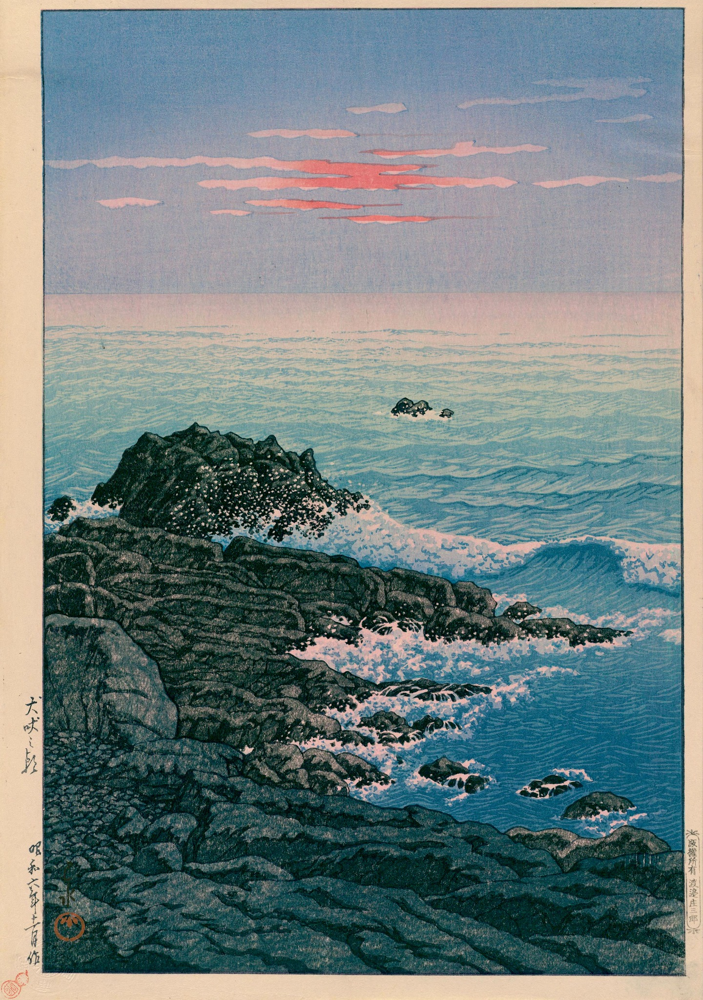
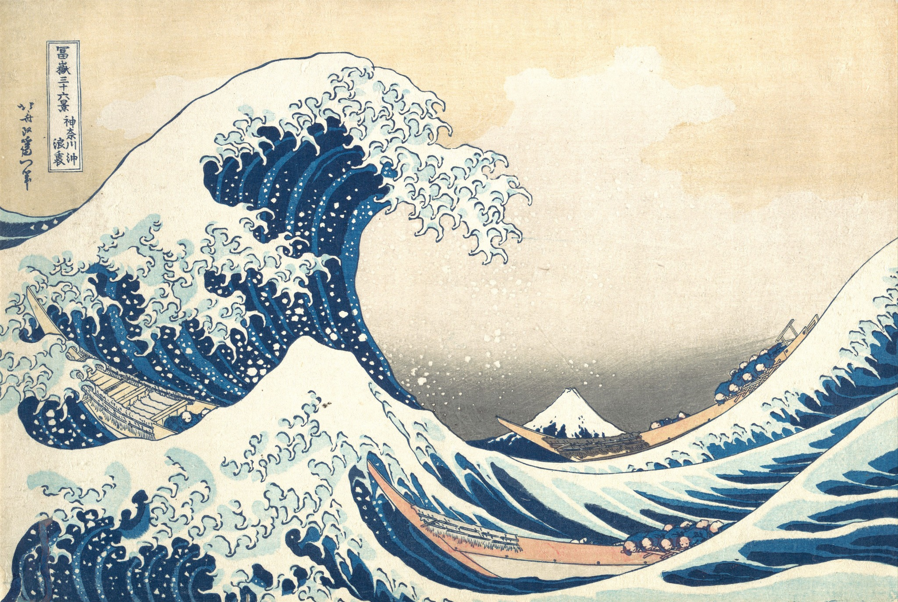

music as a living practice
MAST /\\\
Tim Conley · composer · producer · guitarist


/\\\
Music shaped by listening, movement, memory and the spaces between notes.

Latest MAST release
Battle Hymns of the Republic
A deliberate reflection on events happening in our country and around the world—a spiritual protest scored by orchestral arrangements, spoken word, impassioned jazz, angular electronic beats and samples.
Explore the record →
motion becomes form
“What once sounded like the future has arrived right on time.”Los Angeles Times